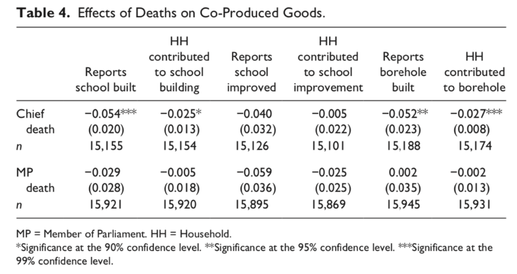
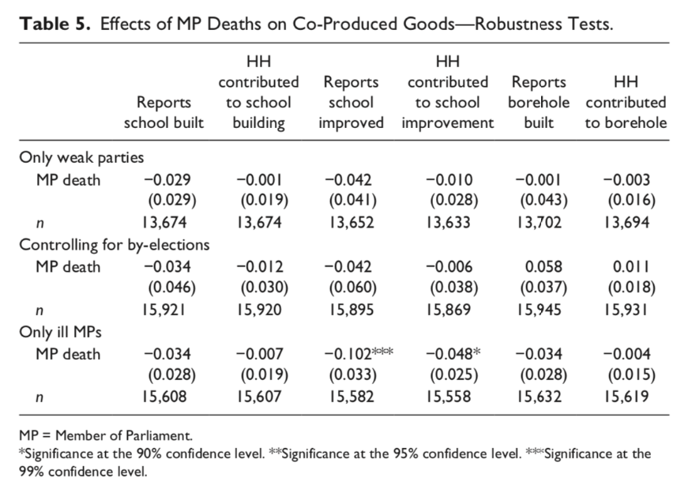
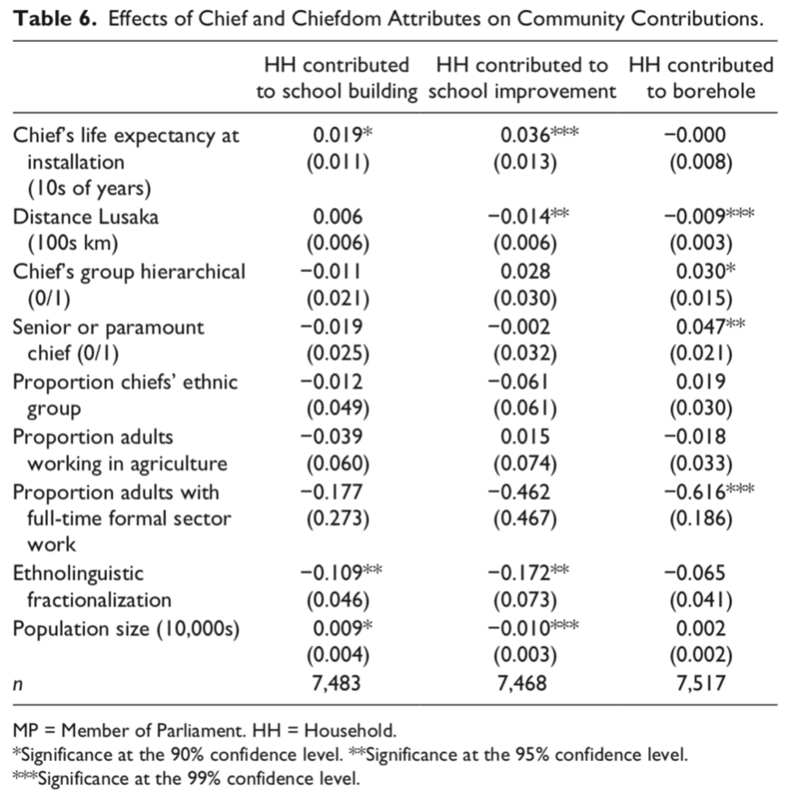

收录于合集
文献来源： Baldwin, K. (2019). Elected MPs, Traditional Chiefs, and Local Public Goods: Evidence on the Role of Leaders in Co-Production From Rural Zambia. Comparative Political Studies , 52(12), 1925-1956.
作者简介： Kate Baldwin，耶鲁大学政治学系副教授，研究方向为非洲国家构建与政治发展。
在财税能力和公共行政能力都较弱的国家中，除了政府资金外，地方公共物品的供给常常要求来自当地共同体的资金和劳动力来协同完成。公共物品供给往往面临着确保政府资助和组织地方集体行动的双重挑战。从既有理论出发，地方议员似乎是组织公共物品供给项目的关键行动者，他们既面临选举压力，有动机推动公共物品供应；又拥有获取政府资金的正式渠道。相比而言，非洲世袭性质的酋长则既缺乏选举压力，又没有获取政府资助的正式渠道。但本文却发现，由于酋长往往能立足长远(long time horizon)展开行动且具有强大的地方关系网络，因而具备推动公共物品供给工程的动机和能力。
****** 地方领导人和公共物品的协同供给 **
本文聚焦于两类领导人在协同供给公共物品上的有效性——当选代表与传统共同体领导人。虽然这两类行动者并不是对所有可能参与公共物品协同供给的行动者的穷举，考虑到脆弱国家中这两类行动者的不同变体，对这两类人的关注为这一问题提供了非常有用的理论分析起点。当选代表包括了所有经共同体成员选举产生的官方领导人，传统领导人指那些因传统治理模式而拥有权力的个人。
现有研究对传统酋长是否有动机推动地方公共物品的提供总体持怀疑态度（Acemoglu, Reed, & Robinson, 2014; Mamdani, 1996; Ntsebeza, 2005)。现有研究认为，相比于谋求个人利益，传统领导人缺乏参与公共物品提供的动机。事实上，许多传统领导人具有攻击公共物品的非选举性动机。他们基本全年生活在自己所领导的共同体之中，他们收入中的大部分也都来自于当地(Baldwin, 2016)。因此酋长们的经济利益与社会福祉是与共同体整体福祉紧密相关的。此外，酋长常常是长期乃至终身任职。基于此，一方面酋长们积累了相当的工作经验；另一方面，他们的行动常常立足长远具有较低的贴现率，这对于回报周期较长的公共服务来说尤为关键。最后，酋长们往往在当地有较强的动员能力和监督能力，既能够组织集体行动又能在一定程度上削弱搭便车行为。
** 赞比亚乡村的领导人与公共物品**
本文主要关注了在1994-2004年间，赞比亚乡村的当选议员和非选举性的酋长在公共物品协同供给上的作用。赞比亚在1991年实现了向多党制的转型，在研究所关注的这段时间里，赞比亚于1996年和2001年进行了该国的第二次和第三次大选。多党民主运动（MMD）在1991年击败了在该国长期执政的联合民族独立党（UNIP）。这段时间也是赞比亚行政能力非常弱的时期，世行等国际组织推动的结构调整工程(SAP)大幅削减了政府开支并将国有企业私有化。由于赞比亚当时脆弱的税收基础和地下的行政能力，许多重要的地方公共物品都要依靠政府拨款和当地的非正式 “税收”(Informal tax)。Olken和Singhal的统计发现，23%的赞比亚乡村家庭在1994-1998年间参与过集体工程的劳动，7%的家庭在这段时间内为这些工程缴纳过先进，3%的家庭在以上两种方式上都有贡献。
在赞比亚共有150名议员和286名世袭酋长。二者的职责都被政府所正式承认。更低层级的选举领导人（地区咨议员）是兼职性的，更低层级的传统领导人（副酋长、村庄头人）并没有被政府所正式承认。作者将当选议员和酋长在整体特征上做了系统比较。议员每5年选举一次，尽管没有任期限制，但大多数议员都没有连任。相反，大多数酋长的在职时间都超过十年。在与共同体的社会和经济联系上，议员能从国家得到大量的津贴和工资收入，而酋长的主要收入往往来自于当地的农场、地方企业和臣民的捐献。此外，95%的酋长都居住在自己治下的共同体，而只有21%的议员真正生活在当地。在正式权力上，1995年后，议员能通过正式机构CDF来推进地方基础设施工程的推进。在2016年的调查中，3/4的议员声称他们对当地公共工程的落实有重大影响。而酋长被正式认可的权力仅限于传统土地的管理。酋长核心的日常工作并没有被国家所承认。例如，酋长常常主持非正式的习惯法法庭。从两类领导人的个人特征对比上，两个群体都主要由男性组成，但议员普遍更年轻、受教育程度也更高。现有的研究主要关注了领导人的选举压力、获取资金的正式渠道以及任职技能(formal skill)。这几项都是议员占优的领域。
研究设计
基于死亡的自然实验
在1994-2004年间，议员和酋长都有较高的在任死亡率。由死亡导致的职位空置期有利于我们认识相关行动者在地方公共物品供给中的作用。酋长的年龄整体上较高，以5年为一个观察区间，1/4的酋长会在这期间死亡，酋长死后平均会存在6个月的职位空置期用来选出新的酋长。一般而言，酋长在任死亡的几率与地方的政治、经济环境是独立的。因为不论地方卫生条件如何，国家都会将重病的酋长接到卢卡萨进行免费治疗。数据也表明，出现酋长死亡情况的酋邦与酋长始终健在的酋邦在经济发展、族群多样性、政治参与、公共卫生水平上都没有系统性的差异。发生议员死亡的地区也是这样。平均来看，议员的年龄都在60岁以下，但是1994-2004年间正是非洲艾滋病流行的时期，艾滋病也是这段时间内导致议员死亡的首要原因。许多议员在竞选期间仍然表现得很健康或尚处潜伏期并未发病，但是艾滋病可能在5年内夺走他们的生命。考虑到艾滋病全国流行的情况，议员的死亡也基本是一个外生因素。议员亡故后，通常有3个月的职位空置期组织补选。
数据
公共物品供给的数据主要来自于1998年和2004年进行的赞比亚生活条件追踪调查(Zambian Living Conditions Monitoring Survey)。本文选取其中最依赖于协同供给的三种地方公共物品：学校建设、学校设施改善和打井(Borehole built)。在1994/1998和2000/2004两个时间段内，398名酋长中有99名去世，210名议员中有27名去世。
回归结果

回归结果显示，酋长死亡与新学校的建立和钻井都有显著的负相关，而议员在这三项公共物品上则没有这样的影响。这说明酋长在组织新学校设立和组织打井上具有关键作用。

接着，本文又进行了稳健性检验。一种竞争性解释是，议员作用不够显著可能是由于地方党组织的存在。尽管赞比亚当时主要政党的地方党组织普遍较弱，但作者还是在排除了UNIP掌控的东部省和MMD掌控的卢萨卡与铜带省后进行了回归，结果表明议员的作用仍然是不显著的。另一种竞争性解释是，议员死亡引发的补选强化了资源向补选地区的流动。尽管议员死亡会引发补选但议员辞职和更换党派也会引发补选，在将补选加入控制后实际结果仍然未发生变化。还有一种担忧是，议员死后的职位空置期仅有酋长的一半，3个月的时间可能不足以影响公共物品供给。一般而言，因病亡故的议员在死前可能已经不能视事了，而因意外亡故的议员在3个月后就能被新任议员增补掉。因此在这轮检验中，作者只看因病亡故议员对公共物品供给的影响，那么可以发现，议员死亡尽管对另两种公共物品供给没有显著影响，但对学校设施的改进却有负作用。这可能是由于，学校的升级改造主要由教育部负责，议员则要在议会中积极争取相应资金，而议员的死亡对这一努力造成了影响。
机制分析
为什么酋长在地方公共物品提供上比议员更为关键？正如前面所讨论的那样，我们无法从正式的职责划分中得到答案。本文对这一机制提出了两个假设，一是酋长任职时间更长，更能立足长远考虑问题；二是酋长与地方共同体的社会和经济联系更紧密，拥有动员地方民众的工具。为了析出这一机制，作者以在任时间期望、社会嵌入性、传统合法性和族群合法性为自变量进行了回归分析。在任时间期望是其中最为重要的一项。其测量方式主要基于在任者的年龄和寿命期望。例如，在1975年，一个30岁的酋长预期还能在活37年，其在任时间期望也就是37。酋长的社会嵌入性主要通过其酋邦与卢卡萨的距离来测量，一般而言离卢卡萨越远的酋邦，其酋长就会花越多的时间在自己的共同体之中，而不是常常去首都生活、交际。

回归结果显示，在所有机制中，在任时间期望是解释酋长在地方公共物品供给上的核心机制。
质性分析进一步支持了酋长由于其长时间在任而在组织地方集体行动上比议员更为重要的观点。在访谈中，许多赞比亚议员都承认酋长的长时间在任让他们在组织集体行动上更有优势。一个赞比亚执政党的高级成员告诉作者“政客们来来去去，酋长则永远在那里(Politicians will come and go, but the chief will always be there)。”
结论
从既有理论出发，我们有足够的理由认为议员在公共物品的协同供给上扮演了更重要的角色，他们既有选举压力，又有争取政府资金的正式渠道。大多数的研究也都认为，传统领导人更专注于个人财富的积累而不是公共福祉的促进。然而，本文的研究发现，酋长才是公共物品协同供给中的关键行动者，因为他们不受选举任期左右，在地方事务上有经年累月的沉淀和更加深远的考虑。
实际上，除了公共物品供给，传统领导人在强迫服从、组织集体政治行动上可能也发挥着重要作用。来自乌干达和利比里亚的实地实验研究表明，传统权威在组织多种类型的社会合作上都比选举上来的政客有效的多(Blair, 2016; Goist & Kern, 2018)。我们需要在非洲和更广大的地区重新评估传统领导人在地方治理中的角色。
注：本号对该学者在相关主题下的另一篇编译参见：（Kate Baldwin：为什么赞比亚选民会给钦定的地方候选人投票？）
编译：赵德昊 审校：杨端程 编辑：郭静远
【政文观止Poliview】系头条号签约作者